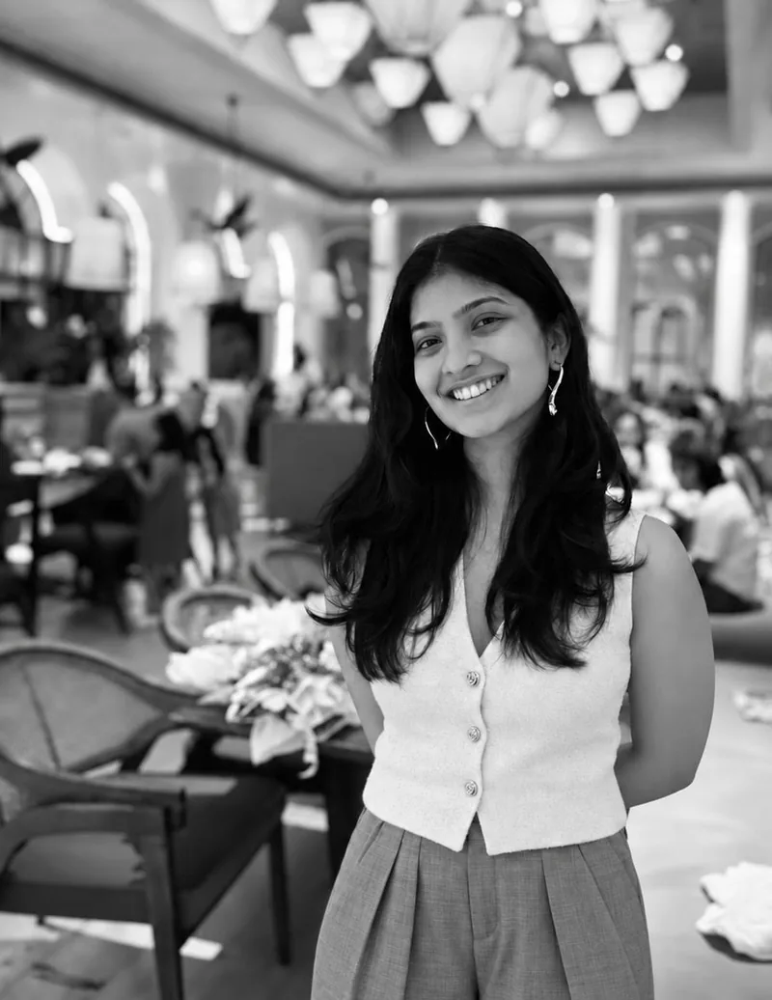
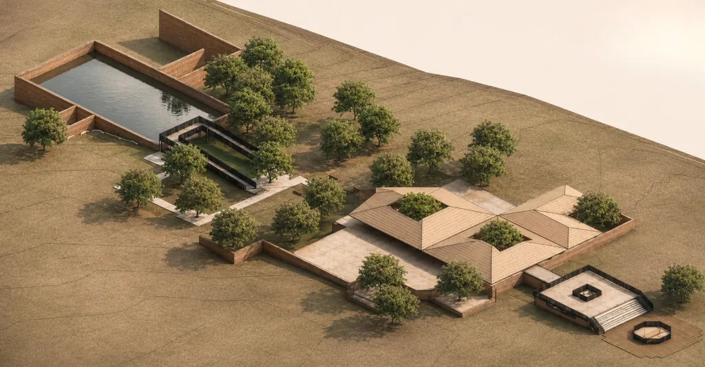
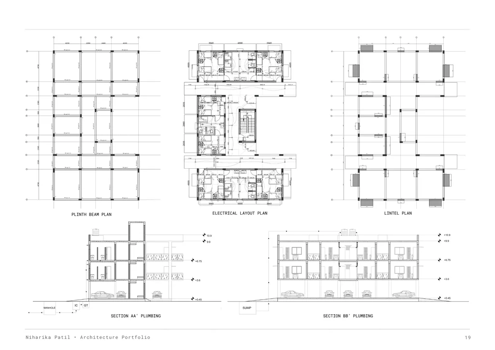
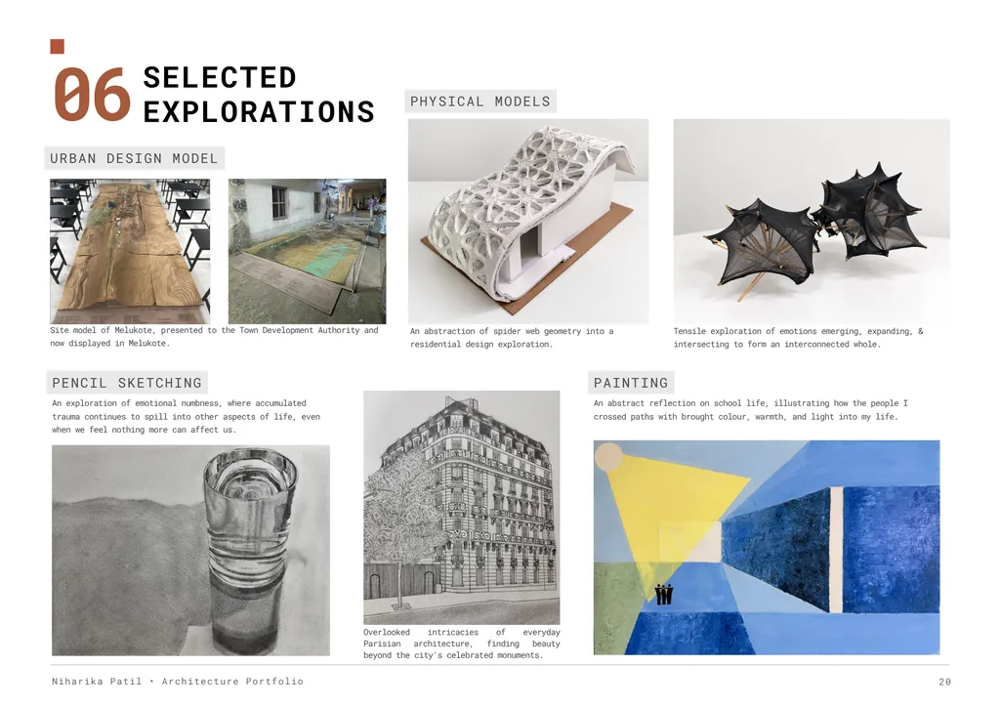
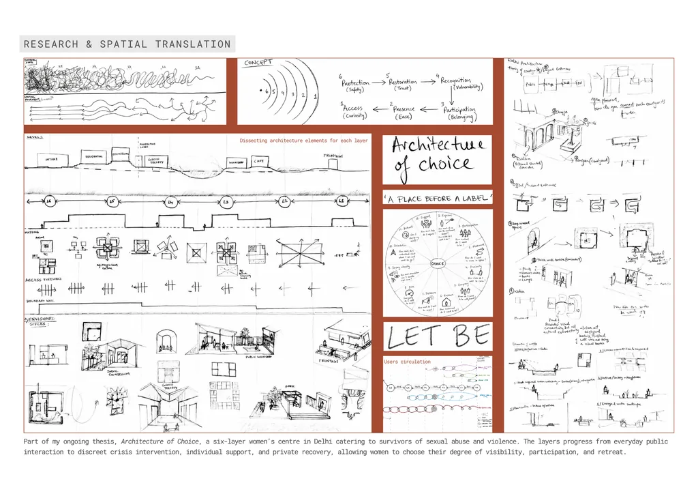

Niharika Patil — RESEARCHINTO SPACE.

I’m Niharika Patil, an architecture student in Bengaluru exploring how human behaviour, perception and research can shape the spaces we inhabit.
SELECTEDWORK.
Six bodies of work spanning architecture, urban inquiry, technical precision and creative exploration. Each opens on the original A3 sheets.
-
01
FIG. 01 / CIRCULATION AS ARCHITECTURE STADIUM DESIGNEXOSKELETALCIRCUIT
40,000 Capacity Football Stadium
Reimagining a 40,000-seat football stadium through exposed circulation towers, crowd behaviour and an exoskeletal system.
- SEM 07
- BENGALURU
- 36 ACRES
- 05 SHEETS
-
02
FIG. 02 / DESIGNING THROUGH THE SENSES INSTITUTIONAL DESIGNSAMVEDANA
Arts Institute for the Visually Impaired
An arts institute on the contoured Chitrakala Parishath site, shaped by sensory cues, interconnected levels and independent navigation.
- SEM 06
- BENGALURU
- 3.4 ACRES
- 04 SHEETS
-
03
FIG. 03 / THE ARCHITECTURE OF MAKING CULTURAL DESIGNMITTI
Pottery Community Centre and Gallery
A centre in Bengaluru’s Pottery Town for production, display and year-round sale — sustaining the craft and the artisans behind it.
- SEM 05
- BENGALURU
- 2.08 ACRES
- 03 SHEETS
-
04

FIG. 04 / MEMORY, CULTURE AND PLACE URBAN DESIGNSAANIDHYA
Melukote Spatial Ethnography Centre
Reviving a neglected waterbody and translating Melukote’s living heritage into spaces of cultural exchange.
- SEM 08
- MELUKOTE
- 4.43 ACRES
- 03 SHEETS
-
05

FIG. 05 / FROM CONCEPT TO DETAIL TECHNICAL DRAFTINGWORKINGDRAWINGS
Construction drawing sets
Excavation, foundation, staircase, plinth beam, electrical, lintel and plumbing drawings — the coordination beneath the built form.
- SEM 06—07
- TECHNICAL
- 02 SHEETS
-
06

FIG. 06 / BEYOND THE DRAWING BOARD RESEARCH & CREATIVE WORKSELECTEDEXPLORATIONS
Models, sketching, painting, photography
Physical models, sketching, photography, painting and ongoing research into the spatial translation of experience.
- ONGOING
- VARIOUS
- 03 SHEETS
A SPACE IS MORETHAN WHAT ITLOOKS LIKE.
My practice begins with research into cognitive neuroscience, human behaviour and spatial perception — translating observations into deliberate decisions about form, movement and experience.
READ MY PROFILE
ARCHITECTUREOF CHOICE.
A six-layer women’s centre in Delhi for survivors of sexual abuse and violence. The layers progress from everyday public interaction to discreet crisis intervention, individual support and private recovery — allowing women to choose their degree of visibility, participation and retreat.
EXPLORE THE RESEARCHNIHARIKAPATIL.
I am a fifth-year architecture student with a research-driven approach to design, deeply interested in cognitive neuroscience, human behaviour, and spatial perception. I explore how these shape human experience, translating research into intentional architectural decisions shaping form and movement.
- Phone
- +91 91081 83202
- niharika-patil ↗
- Based in
- Bengaluru, India
Education
- BMS College of Architecture Design and Planning
- B.Arch · 2022 – present · Bengaluru
- Christ Junior College
- State board · 2019 – 2021 · 86%
- Head Start Educational Academy
- ICSE · 2009 – 2019 · 86%
Software
- Drafting & BIM
- AutoCAD, Revit
- 3D modelling
- Rhino, SketchUp, Grasshopper (basic)
- Visualization
- D5 Render, Twinmotion
- Presentation
- InDesign, Photoshop, Canva
Skills
- Research & conceptual design
- Cognitive research, behavioural mapping, spatial translation
- Sketching
- Pencil, digital, conceptual diagrams
- Painting
- Acrylic, watercolour
- Physical modelling
- Product prototyping, material and form exploration
Participation
- Nippon AYDA Awards — 2026
- Participated
- Buildner Unbuilt Competition — 2025
- Participated
- Melukote 2040: a collective vision for a living sacred town
- Stakeholder interaction
Documentation & publications
- Melukote Documentation
- Mandya, Karnataka
- Saanidhya — Melukote Documentation
- Documentation and editorial team
Languages
English, Hindi, Kannada
Interests
Football, guitar, debates, research papers